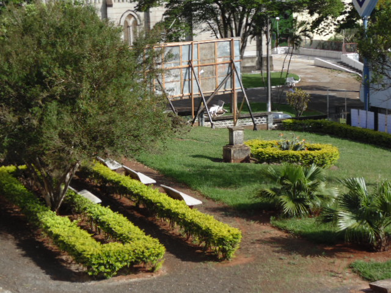

1947um prédio histórico
Quem somos
A melhor escola de São Manuel e região!
O Colégio Holus, localiza-se no centro de São Manuel, prédio de importância histórica para a cidade e para o apostolado da Consolata.
No Holus, a modernidade convive com o estilo tradicional de uma construção que conserva o valioso passado de uma escola que acompanhou o crescimento da cidade.
Inicia-se com o Seminário Filosófico e Teológico “Santa Teresinha do Menino Jesus”, em 1947, abrigando os primeiros seminaristas que vieram de Rio do Oeste (SC), para aqui estudarem….
Continuar Lendo..